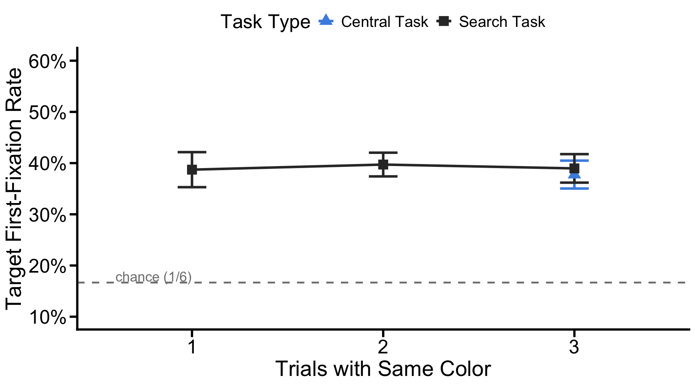

The projects should be numbered consecutively (i.e., in the order in which you began them), and should include for each project a description of the goal, the product (computer program, hand graph, computer graph, etc.), the data, and some interpretation. Reports must be reproducible and of high quality in terms of writing, grammar, presentation, etc.
This portfolio will follow the third goal we proposed in the prior portfolio.
This portfolio will conduct secondary analyses on Target Fixation Rate
The original analysis measured the inhibition side of attentional learning - how much the eye is suppressed from the singleton distractor. But attentional control involves two side - inhibiting the distractor and facilitating selection of the target. If oculomotor suppression of the singleton frees attention to be reallocated toward the target, then the rate at which first eye movements land on the target should increase across trials 1 to 3.
In this way, this analysis asks: does suppression of the singleton distractor come with a corresponding enhancement of target selection? Finding both effects - singleton suppression and target enhancement would provide converging evidence that the 3-trial sequence produces a general retuning of the attentional priority map.
One-sample t-tests against chance (1/6, given 6 equally-spaced items) test whether participants are above chance at fixating the target at each trial position. If target fixation is already above chance from trial 1, that suggests participants always have some target guidance; if it increases across trials, that suggests suppression actively redirects attention towards the target.
Predicted Patterns - Search task: Target
fixation rate increases from Trial 1 to Trial 3, as oculomotor resources
freed from the singleton are redirected toward the target. - Central
task: Because only Trial 3 involves free eye movements, target
fixation rate cannot change across trials in the same way; any apparent
change should be treated cautiously. - Interaction: A
newtrial × taskType interaction would confirm that the
increase in target selection is specific to the search task and driven
by suppression learning.
We reuse the firstfix2 structure from the original
analysis pipeline, which already computes the percentage of first
fixations to each item (Target, Singleton, Nonsingleton) by subject ×
task × trial. We simply extract the Target rows, which the original
analysis never statistically tested.
rm(list = ls())
setwd("~/Documents/GitHub/DS4P_Portfolio")
library('NickPsych')
library('tidyverse')
library('reshape2')
library('writexl')
library('dplyr')
library('bruceR')
library('openxlsx')
library('knitr')
library('xtable')
library('patchwork')
# Load preprocessed data
accdata <- read.csv("/Users/mumizz./Desktop/2025-2026/Courses/Data science for psych/Experiment3/Analysis Script/accdata.csv")
# Plot theme (matching manuscript style)
axis_text_size <- 20
axis_tick_text_size <- 18
graph_color <- "black"
axis_tick_length <- 0.25
axis_tick_units <- "cm"
axis_thickness <- 1
manuscript_theme <- theme_classic() +
theme(
axis.line = element_line(linewidth = axis_thickness, colour = graph_color),
axis.title = element_text(size = axis_text_size),
axis.text = element_text(colour = graph_color, size = axis_tick_text_size),
axis.ticks = element_line(linewidth = axis_thickness, colour = graph_color),
axis.ticks.length.y = unit(axis_tick_length, axis_tick_units),
axis.ticks.length.x = unit(axis_tick_length, axis_tick_units),
legend.position = "top",
text = element_text(size = axis_tick_text_size)
)# firstfix2 (identical to the original script)
accdata2 <- subset(accdata, !is.na(SRT))
firstfix2 <- as.data.frame(
xtabs(~ curritem + subjnum + taskType + newtrial, data = accdata2)
)
# Total number of fixations on items in the display
firstfix2$total <- with(firstfix2, ave(Freq, interaction(subjnum, taskType, newtrial), FUN = sum))
# % of the toal each item was fixated
firstfix2$perc <- firstfix2$Freq / firstfix2$total
firstfix2$perc <- with(firstfix2,
ifelse(curritem == 'Nonsingleton', perc / 4, perc))
firstfix2$perc[is.nan(firstfix2$perc)] <- 0
firstfix2 <- firstfix2[, -c(5, 6)]
# Extract Target rows only — this is what the original script never tested
targfix <- firstfix2 %>% filter(curritem == "Target")
targfix %>%
group_by(taskType, newtrial) %>%
summarise(M = round(mean(perc), 4),
SD = round(sd(perc), 4),
n = n(), .groups = "drop") %>%
kable(caption = "Table 3. Target first-fixation rate (%) by condition and trial position. Chance = 0.167 (1/6).")| taskType | newtrial | M | SD | n |
|---|---|---|---|---|
| central | 1 | 0.0000 | 0.0000 | 40 |
| central | 2 | 0.0000 | 0.0000 | 40 |
| central | 3 | 0.3776 | 0.1462 | 40 |
| search | 1 | 0.3872 | 0.1479 | 40 |
| search | 2 | 0.3972 | 0.1642 | 40 |
| search | 3 | 0.3897 | 0.1672 | 40 |
In the search task, mean target fixation rate was 38.72% (SD = 14.79%) on trial 1, 39.72% (SD = 16.42%) on trial 2, and 38.97% (SD = 16.72%) on trial 3, flat across the sequence and consistently above the 1/6 chance baseline. In the central task, only trial 3 yielded valid fixation data (eye movements were restricted on trials 1 and 2). Mean target fixation rate on central trial 3 was 37.76% (SD = 14.62%), close to the rates in search task at all trial positions.
MANOVA(
data = targfix,
subID = "subjnum",
dv = "perc",
within = c('newtrial', 'taskType'),
digits = 2
) %>%
EMMEANS('newtrial') %>%
EMMEANS('taskType') %>%
EMMEANS('taskType', by = 'newtrial')##
## * Data are aggregated to mean (across items/trials)
## if there are >=2 observations per subject and cell.
## You may use Linear Mixed Model to analyze the data,
## e.g., with subjects and items as level-2 clusters.##
## ====== ANOVA (Within-Subjects Design) ======
##
## Descriptives:
## ─────────────────────────────────────
## "newtrial" "taskType" Mean S.D. n
## ─────────────────────────────────────
## newtrial1 central 0.00 (0.00) 40
## newtrial1 search 0.39 (0.15) 40
## newtrial2 central 0.00 (0.00) 40
## newtrial2 search 0.40 (0.16) 40
## newtrial3 central 0.38 (0.15) 40
## newtrial3 search 0.39 (0.17) 40
## ─────────────────────────────────────
## Total sample size: N = 40
##
## ANOVA Table:
## Dependent variable(s): perc
## Between-subjects factor(s): –
## Within-subjects factor(s): newtrial, taskType
## Covariate(s): –
## ───────────────────────────────────────────────────────────────────────────────
## MS MSE df1 df2 F p η²p [90% CI of η²p] η²G
## ───────────────────────────────────────────────────────────────────────────────
## newtrial 0.94 0.01 2 78 169.13 <.001 *** .81 [.75, .85] .33
## taskType 4.23 0.02 1 39 212.08 <.001 *** .84 [.77, .89] .52
## newtrial * taskType 0.96 0.00 2 78 194.46 <.001 *** .83 [.78, .87] .33
## ───────────────────────────────────────────────────────────────────────────────
## MSE = mean square error (the residual variance of the linear model)
## η²p = partial eta-squared = SS / (SS + SSE) = F * df1 / (F * df1 + df2)
## ω²p = partial omega-squared = (F - 1) * df1 / (F * df1 + df2 + 1)
## η²G = generalized eta-squared (see Olejnik & Algina, 2003)
## Cohen’s f² = η²p / (1 - η²p)
##
## Levene’s Test for Homogeneity of Variance:
## No between-subjects factors. No need to do the Levene’s test.
##
## Mauchly’s Test of Sphericity:
## ──────────────────────────────────────────
## Mauchly's W p
## ──────────────────────────────────────────
## newtrial 0.5850 <.001 ***
## newtrial * taskType 0.6358 <.001 ***
## ──────────────────────────────────────────
## The sphericity assumption is violated.
## You may specify: sph.correction="GG" (or ="HF")
##
## ------ EMMEANS (effect = "newtrial") ------
##
## Error in solve.default(zcov, z) :
## system is computationally singular: reciprocal condition number = 1.46499e-35
## Error in solve.default(zcov, z) :
## system is computationally singular: reciprocal condition number = 1.34076e-35
## Joint Tests of "newtrial":
## ──────────────────────────────────────────────────────────────────
## Effect df1 df2 F p η²p [90% CI of η²p]
## ──────────────────────────────────────────────────────────────────
## taskType 1 39 212.076 <.001 *** .845 [.767, .889]
## newtrial 2 39 105.410 <.001 *** .844 [.765, .888]
## taskType * newtrial 2 39 124.914 <.001 *** .865 [.796, .903]
## ──────────────────────────────────────────────────────────────────
## Note. Simple effects of repeated measures with 3 or more levels
## are different from the results obtained with SPSS MANOVA syntax.
##
## Estimated Marginal Means of "newtrial":
## ─────────────────────────────────────────
## "newtrial" Mean [95% CI of Mean] S.E.
## ─────────────────────────────────────────
## newtrial1 0.194 [0.170, 0.217] (0.012)
## newtrial2 0.199 [0.172, 0.225] (0.013)
## newtrial3 0.384 [0.336, 0.431] (0.023)
## ─────────────────────────────────────────
##
## Pairwise Comparisons of "newtrial":
## ───────────────────────────────────────────────────────────────────────────────────
## Contrast Estimate S.E. df t p Cohen’s d [95% CI of d]
## ───────────────────────────────────────────────────────────────────────────────────
## newtrial2 - newtrial1 0.005 (0.007) 39 0.697 1.000 0.039 [-0.101, 0.179]
## newtrial3 - newtrial1 0.190 (0.014) 39 13.483 <.001 *** 1.485 [ 1.209, 1.760]
## newtrial3 - newtrial2 0.185 (0.013) 39 14.356 <.001 *** 1.446 [ 1.194, 1.698]
## ───────────────────────────────────────────────────────────────────────────────────
## Pooled SD for computing Cohen’s d: 0.128
## Results are averaged over the levels of: taskType
## P-value adjustment: Bonferroni method for 3 tests.
##
## Disclaimer:
## By default, pooled SD is Root Mean Square Error (RMSE).
## There is much disagreement on how to compute Cohen’s d.
## You are completely responsible for setting `sd.pooled`.
## You might also use `effectsize::t_to_d()` to compute d.
##
## ------ EMMEANS (effect = "taskType") ------
##
## Error in solve.default(zcov, z) :
## system is computationally singular: reciprocal condition number = 1.46499e-35
## Error in solve.default(zcov, z) :
## system is computationally singular: reciprocal condition number = 1.34076e-35
## Joint Tests of "taskType":
## ──────────────────────────────────────────────────────────────────
## Effect df1 df2 F p η²p [90% CI of η²p]
## ──────────────────────────────────────────────────────────────────
## taskType 1 39 212.076 <.001 *** .845 [.767, .889]
## newtrial 2 39 105.410 <.001 *** .844 [.765, .888]
## taskType * newtrial 2 39 124.914 <.001 *** .865 [.796, .903]
## ──────────────────────────────────────────────────────────────────
## Note. Simple effects of repeated measures with 3 or more levels
## are different from the results obtained with SPSS MANOVA syntax.
##
## Estimated Marginal Means of "taskType":
## ─────────────────────────────────────────
## "taskType" Mean [95% CI of Mean] S.E.
## ─────────────────────────────────────────
## central 0.126 [0.110, 0.141] (0.008)
## search 0.391 [0.342, 0.440] (0.024)
## ─────────────────────────────────────────
##
## Pairwise Comparisons of "taskType":
## ──────────────────────────────────────────────────────────────────────────────
## Contrast Estimate S.E. df t p Cohen’s d [95% CI of d]
## ──────────────────────────────────────────────────────────────────────────────
## search - central 0.265 (0.018) 39 14.563 <.001 *** 2.074 [1.786, 2.363]
## ──────────────────────────────────────────────────────────────────────────────
## Pooled SD for computing Cohen’s d: 0.128
## Results are averaged over the levels of: newtrial
## No need to adjust p values.
##
## Disclaimer:
## By default, pooled SD is Root Mean Square Error (RMSE).
## There is much disagreement on how to compute Cohen’s d.
## You are completely responsible for setting `sd.pooled`.
## You might also use `effectsize::t_to_d()` to compute d.
##
## ------ EMMEANS (effect = "taskType") ------
##
## Joint Tests of "taskType":
## ──────────────────────────────────────────────────────────────────
## Effect "newtrial" df1 df2 F p η²p [90% CI of η²p]
## ──────────────────────────────────────────────────────────────────
## taskType newtrial1 1 39 274.121 <.001 *** .875 [.813, .911]
## taskType newtrial2 1 39 234.047 <.001 *** .857 [.786, .898]
## taskType newtrial3 1 39 0.539 .467 .014 [.000, .126]
## ──────────────────────────────────────────────────────────────────
## Note. Simple effects of repeated measures with 3 or more levels
## are different from the results obtained with SPSS MANOVA syntax.
##
## Estimated Marginal Means of "taskType":
## ────────────────────────────────────────────────────
## "taskType" "newtrial" Mean [95% CI of Mean] S.E.
## ────────────────────────────────────────────────────
## central newtrial1 0.000 [0.000, 0.000] (0.000)
## search newtrial1 0.387 [0.340, 0.434] (0.023)
## central newtrial2 0.000 [0.000, 0.000] (0.000)
## search newtrial2 0.397 [0.345, 0.450] (0.026)
## central newtrial3 0.378 [0.331, 0.424] (0.023)
## search newtrial3 0.390 [0.336, 0.443] (0.026)
## ────────────────────────────────────────────────────
##
## Pairwise Comparisons of "taskType":
## ─────────────────────────────────────────────────────────────────────────────────────────
## Contrast "newtrial" Estimate S.E. df t p Cohen’s d [95% CI of d]
## ─────────────────────────────────────────────────────────────────────────────────────────
## search - central newtrial1 0.387 (0.023) 39 16.557 <.001 *** 3.025 [ 2.656, 3.395]
## search - central newtrial2 0.397 (0.026) 39 15.299 <.001 *** 3.103 [ 2.693, 3.514]
## search - central newtrial3 0.012 (0.016) 39 0.734 .467 0.095 [-0.166, 0.355]
## ─────────────────────────────────────────────────────────────────────────────────────────
## Pooled SD for computing Cohen’s d: 0.128
## No need to adjust p values.
##
## Disclaimer:
## By default, pooled SD is Root Mean Square Error (RMSE).
## There is much disagreement on how to compute Cohen’s d.
## You are completely responsible for setting `sd.pooled`.
## You might also use `effectsize::t_to_d()` to compute d.Because central-task Trials 1 and 2 contain structural zeros (no eye movements were made), a 2 (taskType) x 3 (newtrial) ANOVA produces severely inflated effects driven entirely by the zero cells rather than by any meaningful difference in target guidance. The 2×3 ANOVA is therefore not interpretable and is excluded from the primary analysis. The search-only one-way ANOVA is the appropriate test of learning-driven change across the 3-trial sequence.
targfix_search <- targfix %>% filter(taskType == "search")
MANOVA(
data = targfix_search,
subID = "subjnum",
dv = "perc",
within = 'newtrial',
digits = 2
) %>%
EMMEANS('newtrial')##
## * Data are aggregated to mean (across items/trials)
## if there are >=2 observations per subject and cell.
## You may use Linear Mixed Model to analyze the data,
## e.g., with subjects and items as level-2 clusters.##
## ====== ANOVA (Within-Subjects Design) ======
##
## Descriptives:
## ──────────────────────────
## "newtrial" Mean S.D. n
## ──────────────────────────
## newtrial1 0.39 (0.15) 40
## newtrial2 0.40 (0.16) 40
## newtrial3 0.39 (0.17) 40
## ──────────────────────────
## Total sample size: N = 40
##
## ANOVA Table:
## Dependent variable(s): perc
## Between-subjects factor(s): –
## Within-subjects factor(s): newtrial
## Covariate(s): –
## ──────────────────────────────────────────────────────────────────
## MS MSE df1 df2 F p η²p [90% CI of η²p] η²G
## ──────────────────────────────────────────────────────────────────
## newtrial 0.00 0.00 2 78 0.32 .727 .01 [.00, .05] .00
## ──────────────────────────────────────────────────────────────────
## MSE = mean square error (the residual variance of the linear model)
## η²p = partial eta-squared = SS / (SS + SSE) = F * df1 / (F * df1 + df2)
## ω²p = partial omega-squared = (F - 1) * df1 / (F * df1 + df2 + 1)
## η²G = generalized eta-squared (see Olejnik & Algina, 2003)
## Cohen’s f² = η²p / (1 - η²p)
##
## Levene’s Test for Homogeneity of Variance:
## No between-subjects factors. No need to do the Levene’s test.
##
## Mauchly’s Test of Sphericity:
## ───────────────────────────────
## Mauchly's W p
## ───────────────────────────────
## newtrial 0.9533 .403
## ───────────────────────────────
##
## ------ EMMEANS (effect = "newtrial") ------
##
## Joint Tests of "newtrial":
## ─────────────────────────────────────────────────────
## Effect df1 df2 F p η²p [90% CI of η²p]
## ─────────────────────────────────────────────────────
## newtrial 2 39 0.276 .760 .014 [.000, .085]
## ─────────────────────────────────────────────────────
## Note. Simple effects of repeated measures with 3 or more levels
## are different from the results obtained with SPSS MANOVA syntax.
##
## Estimated Marginal Means of "newtrial":
## ─────────────────────────────────────────
## "newtrial" Mean [95% CI of Mean] S.E.
## ─────────────────────────────────────────
## newtrial1 0.387 [0.340, 0.434] (0.023)
## newtrial2 0.397 [0.345, 0.450] (0.026)
## newtrial3 0.390 [0.336, 0.443] (0.026)
## ─────────────────────────────────────────
##
## Pairwise Comparisons of "newtrial":
## ───────────────────────────────────────────────────────────────────────────────────
## Contrast Estimate S.E. df t p Cohen’s d [95% CI of d]
## ───────────────────────────────────────────────────────────────────────────────────
## newtrial2 - newtrial1 0.010 (0.014) 39 0.697 1.000 0.122 [-0.315, 0.558]
## newtrial3 - newtrial1 0.002 (0.012) 39 0.201 1.000 0.030 [-0.345, 0.405]
## newtrial3 - newtrial2 -0.008 (0.012) 39 -0.614 1.000 -0.091 [-0.463, 0.281]
## ───────────────────────────────────────────────────────────────────────────────────
## Pooled SD for computing Cohen’s d: 0.082
## P-value adjustment: Bonferroni method for 3 tests.
##
## Disclaimer:
## By default, pooled SD is Root Mean Square Error (RMSE).
## There is much disagreement on how to compute Cohen’s d.
## You are completely responsible for setting `sd.pooled`.
## You might also use `effectsize::t_to_d()` to compute d.The one-way ANOVA on search-task target fixation rate found no significant effect of trial position, F(2, 78) = 0.32, p = .727, η²p = .008. All pairwise contrasts were non-significant after Bonferroni correction. Target fixation rate was therefore stable across the entire 3-trial sequence.
These tests ask, at each trial position, whether participants’ target fixation rate is reliably above the 1/6 chance baseline. This helps distinguish between two interpretations: (a) target guidance is always strong and does not meaningfully change, or (b) guidance is weak early (when the singleton competes) and strengthens across trials.
chance <- 1 / 6
options(scipen = 999)
targfix_wide <- targfix_search %>%
pivot_wider(names_from = newtrial, values_from = perc)
for (i in 1:3) {
t_frame <- data.frame(perc = targfix_wide[[as.character(i)]])
TTEST(t_frame, "perc", test.value = chance, paired = FALSE, digits = 3)
}##
## One-Sample t-test
##
## Hypothesis: two-sided (μ ≠ 0.166666666666667)## `BayesFactor` package needs to be installed.## Descriptives:
## ──────────────────────────
## Variable N Mean (S.D.)
## ──────────────────────────
## perc 40 0.387 (0.148)
## ──────────────────────────
##
## Results of t-test:
## ──────────────────────────────────────────────────────────────────────────────────────────────
## t df p Difference [95% CI] Cohen’s d [95% CI]
## ──────────────────────────────────────────────────────────────────────────────────────────────
## perc: (perc - 0.166666666666667) 9.430 39 <.001 *** 0.221 [0.173, 0.268] 1.491 [1.171, 1.811]
## ──────────────────────────────────────────────────────────────────────────────────────────────
##
##
## One-Sample t-test
##
## Hypothesis: two-sided (μ ≠ 0.166666666666667)## `BayesFactor` package needs to be installed.## Descriptives:
## ──────────────────────────
## Variable N Mean (S.D.)
## ──────────────────────────
## perc 40 0.397 (0.164)
## ──────────────────────────
##
## Results of t-test:
## ──────────────────────────────────────────────────────────────────────────────────────────────
## t df p Difference [95% CI] Cohen’s d [95% CI]
## ──────────────────────────────────────────────────────────────────────────────────────────────
## perc: (perc - 0.166666666666667) 8.879 39 <.001 *** 0.231 [0.178, 0.283] 1.404 [1.084, 1.724]
## ──────────────────────────────────────────────────────────────────────────────────────────────
##
##
## One-Sample t-test
##
## Hypothesis: two-sided (μ ≠ 0.166666666666667)## `BayesFactor` package needs to be installed.## Descriptives:
## ──────────────────────────
## Variable N Mean (S.D.)
## ──────────────────────────
## perc 40 0.390 (0.167)
## ──────────────────────────
##
## Results of t-test:
## ──────────────────────────────────────────────────────────────────────────────────────────────
## t df p Difference [95% CI] Cohen’s d [95% CI]
## ──────────────────────────────────────────────────────────────────────────────────────────────
## perc: (perc - 0.166666666666667) 8.434 39 <.001 *** 0.223 [0.170, 0.276] 1.334 [1.014, 1.653]
## ──────────────────────────────────────────────────────────────────────────────────────────────Despite showing no change across trials, target fixation was strongly and consistently above the chance baseline (1/6) at every trial position. Trial 1: t(39) = 9.43, p < .001, Cohen’s d = 1.491; Trial 2: t(39) = 8.88, p < .001, Cohen’s d = 1.404; Trial 3: t(39) = 8.43, p < .001, Cohen’s d = 1.33. All three effect sizes are large, indicating that participants’ first saccades were directed toward the target at more than twice the chance rate throughout the sequence.
Trial 3 is the only trial position where both tasks yield valid free-viewing first fixation data. This makes it the direct target-fixation analogue of the Figure 6C in the manuscript, a within-subjects test asking whether prior suppression learning in the search task (trials 1-2) produced a measurably higher target fixation rate on trial 3, relative to the trial 3 of central task where is the first time participants experienced the free-viewing display.
In this way, if suppression of the singleton actively redirects attention toward the target, search-task trial 3 should show higher target fixation rate than central-task trial 3. If suppression is purely inhibitory, the two conditions should be statistically indistinguishable on trial 3.
# Extract trial 3 from both task types
t3_both <- targfix %>%
filter(newtrial == "3") %>%
select(subjnum, taskType, perc) %>%
pivot_wider(names_from = taskType, values_from = perc)
t.test(t3_both$central, t3_both$search, paired = TRUE)##
## Paired t-test
##
## data: t3_both$central and t3_both$search
## t = -0.734, df = 39, p-value = 0.4673
## alternative hypothesis: true mean difference is not equal to 0
## 95 percent confidence interval:
## -0.04543753 0.02124094
## sample estimates:
## mean difference
## -0.0120983A pair-sample t-test revealed no significant difference in target first-fixation rate between the search task and the central task, t(39) = -.73, p = .47, 95% CI[-.05, .02]. This null result indicates that the two task contexts coverage on an equivalent baseline level of target fixation during unconstrained viewing, ruling out any task-specific strategic or contextual advantage in target searching.
targ_plot <- with(targfix,
cmErrBar(perc, subjnum, paste(taskType, newtrial, curritem), "ci")) %>%
separate(group, into = c("condition", "trial", "item"), sep = " ")
targ_plot$trial <- factor(targ_plot$trial, levels = c("1", "2", "3"))
ggplot(targ_plot, aes(x = trial, y = mean, group = condition, color = condition)) +
geom_errorbar(aes(ymin = minus, ymax = plus), width = 0.15, linewidth = 1.1) +
geom_line(linewidth = 1.1, aes(linetype = condition)) +
geom_point(size = 4, aes(shape = condition)) +
geom_hline(yintercept = 1 / 6, linetype = "dashed", color = "gray50", linewidth = 0.8) +
annotate("text", x = 0.6, y = 1 / 6 + 0.012, label = "chance (1/6)",
color = "gray50", size = 4.5, hjust = 0) +
scale_color_manual(values = c("central" = "#4A90E2", "search" = "#333333"),
labels = c("Central Task", "Search Task")) +
scale_shape_manual(values = c("central" = 17, "search" = 15),
labels = c("Central Task", "Search Task")) +
scale_linetype_manual(values = c("central" = "dashed", "search" = "solid"),
labels = c("Central Task", "Search Task")) +
scale_y_continuous(limits = c(0.1, 0.6), breaks = seq(0.1, 0.6, 0.1),
labels = scales::percent_format(accuracy = 1)) +
labs(x = "Trials with Same Color",
y = "Target First-Fixation Rate",
color = "Task Type", shape = "Task Type", linetype = "Task Type") +
manuscript_theme## Warning: Removed 2 rows containing missing values or values outside the scale range
## (`geom_line()`).## Warning: Removed 2 rows containing missing values or values outside the scale range
## (`geom_point()`).
Figure S3. Target first-fixation rate (%) across trial positions by task type. Dashed gray line = chance (1/6 ≈ 16.7%). Error bars = 95% CI (Cousineau-Morey corrected).
Across all five steps, target first-fixation rates showed a consistent pattern: robustly above chance throughout, but completely unmodulated by the three-trial suppression learning cycle. The one-way ANOVA within the search task was non-significant, and the cross-task trial 3 comparison was likewise non-significant. As visualised in the figure above, the two task-type lines run essentially flat and parallel across trial positions, both sitting well above the chance baseline.
This null result is theoretically meaningful. Taken together with the original finding that singleton fixation drops sharply from trial 1 to trial 3, the flat target fixation curve reveals a clear dissociation: suppression learning selectively reduces the singleton’s oculomotor priority without boosting the target’s. This findings may indicate that the freed attentional resources do not automatically flow toward the goal — they disperse to other (nonsingleton) locations instead. This pattern supports a purely inhibitory account of learned oculomotor suppression: the mechanism acts by tagging and deprioritising the distractor, not by actively enhancing target guidance. Target prioritization and singleton suppression appear to operate through partially independent mechanisms within the attentional priority map.